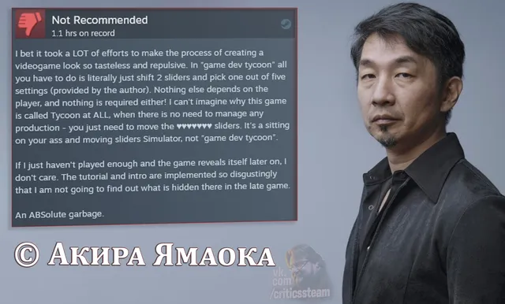

Обзоры знаменитостей
ВКонтакте
Game Dev Tycoon
28 октября 2023 · №2128 в выгрузке стены · оригинал во ВКонтакте ↗

(Английский): "Наверняка потребовалось немало усилий, чтобы процесс создания видеоигры выглядел так безвкусно и отвратительно. В "game dev tycoon" все, что нужно сделать, - это буквально сдвинуть 2 ползунка и выбрать одну из пяти настроек (предоставленных автором). Больше от игрока ничего не зависит, да и не требуется! Я не могу понять, почему эта игра вообще называется Tycoon, ведь в ней не нужно управлять никаким производством - нужно просто двигать ползунки ♥♥♥♥♥♥♥. Это симулятор сидения на заднице и передвижения ползунков, а не "игровой магнат".
Если я просто недостаточно поиграл и игра раскроется позже, мне будет все равно. Туториал и вступление реализованы настолько отвратительно, что я не собираюсь выяснять, что там скрывается в поздней игре.
АБСОЛЮТНЫЙ мусор."
» Game Dev Tycoon
#ОбзорыЗнаменитостей@criticssteam 🎹
🇳🇱 #ИностранныйОбзор@criticssteam
🎧 Обзор доступен в профессиональной озвучке! Критики Стим - Game Dev Tycon
Если я просто недостаточно поиграл и игра раскроется позже, мне будет все равно. Туториал и вступление реализованы настолько отвратительно, что я не собираюсь выяснять, что там скрывается в поздней игре.
АБСОЛЮТНЫЙ мусор."
» Game Dev Tycoon
#ОбзорыЗнаменитостей@criticssteam 🎹
🇳🇱 #ИностранныйОбзор@criticssteam
🎧 Обзор доступен в профессиональной озвучке! Критики Стим - Game Dev Tycon